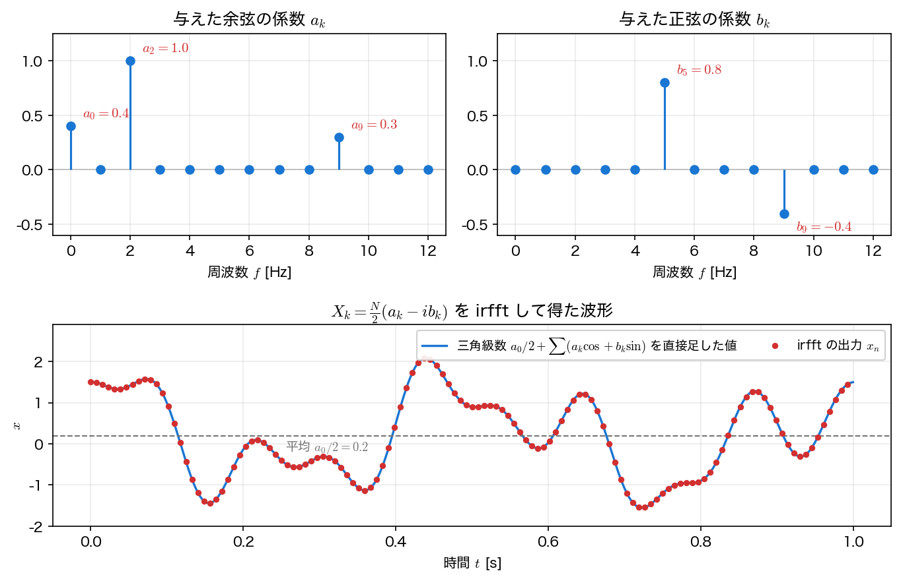

サンプリングと FFT
フーリエ変換は連続な積分で定義されるが、計算機が扱えるのは 有限個のサンプル だけである。本ページでは、連続信号をサンプリングするときの基本定理（ナイキスト・エイリアシング）、離散版の DFT と、\(X_k\) と余弦・正弦の係数 \(a_k\), \(b_k\) の関係、それを高速化する FFT、そして numpy.fft による変換と irfft による波形の合成を扱う。
サンプリングとサンプリング定理
連続信号 \(x(t)\) を一定間隔 \(\Delta t\) ごとに測ることを サンプリング という。\(\Delta t\) を サンプリング間隔、その逆数 \(f_s=1/\Delta t\) を サンプリング周波数 と呼ぶ。この \(\Delta t\) は、フーリエ変換 の不確定性関係の時間幅 \(\Delta t\) とは別の量である。以下の \(\Delta t\) は、すべてサンプリング間隔を表す。
サンプリングで重要なのが サンプリング定理 である。
サンプリング定理（ナイキスト）
信号が \(f_{\max}\) より高い周波数成分をもたない（帯域制限されている）とする。サンプリング周波数が
を満たせば、サンプル列から元の連続信号を 完全に復元できる。境界となる \(f_s/2\) を ナイキスト周波数 と呼ぶ。
「完全に復元」の意味
この主張が言うのは、\(-\infty<n<\infty\) の 無限個の正確なサンプル \(x(n\Delta t)\) と理想的な sinc 補間
を使えば元の連続信号が復元できる、ということである。ここで \(\mathrm{sinc}\,x=\sin(\pi x)/(\pi x)\) で、\(x=0\) で \(1\)、\(0\) 以外の整数 \(x\) で \(0\) になる。そのため各サンプル点では、その点のサンプルの値だけが残る。これは、フーリエ変換 の表の「sinc 型」の \(\sin x/x\) で、\(x\) を \(\pi x\) に置き換えた形である。実際に手元にあるのは有限個・有限桁のサンプルなので、区間の端では誤差が残る。また現実の信号は厳密には帯域制限されていないので、サンプリングの前にアナログの低域通過フィルタ（アンチエイリアシングフィルタ）で \(f_s/2\) 以上を落としておくのが実務の定石である。
つまり、興味のある最高周波数の 2倍より速く 測れば情報は失われない。逆に、これを破ると次の現象が起きる。
エイリアシング
ナイキスト周波数 \(f_s/2\) を 超える 周波数成分は、サンプリングすると低い周波数に 化けて 現れる。これを エイリアシング（折り返し） と呼ぶ。見かけの周波数は
で与えられる。\(\mathrm{round}\) は最も近い整数への丸めである。たとえば \(f=18\) Hz の信号を \(f_s=20\) Hz（ナイキスト \(10\) Hz）でサンプリングすると、\(\mathrm{round}(18/20)=\mathrm{round}(0.9)=1\) より
となる。サンプル点は \(2\) Hz の信号と 完全に一致 し、\(2\) Hz の波にしか見えなくなる。
import numpy as np
n = np.arange(0, 40)
xs = np.cos(2 * np.pi * 18 * n / 20) # 真の 18Hz を fs=20Hz でサンプリング
xa = np.cos(2 * np.pi * 2 * n / 20) # 見かけの 2Hz
print(f"max|サンプル(18Hz) - サンプル(2Hz)| = {np.max(np.abs(xs - xa)):.2e}")
差は丸め誤差だけで、サンプル点では \(18\) Hz と \(2\) Hz を区別できない。

離散フーリエ変換（DFT）
\(N\) 個のサンプル \(x_0,x_1,\dots,x_{N-1}\)（間隔 \(\Delta t\)）に対する 離散フーリエ変換（DFT） と逆変換を次で定義する。
参考に、フーリエ変換 の変換対を並べる。
どちらも順変換の指数は \(-\)、逆変換の指数は \(+\) で、係数（\(1/N\) と \(1/2\pi\)）は逆変換の側にある。
各 \(X_k\) は周波数
の成分に対応する。実信号では \(k>N/2\) が負の周波数（＝折り返し）にあたるので、意味のある片側の範囲は
である（\(\lfloor\cdot\rfloor\) は切り捨て）。np.fft.rfftfreq は、この範囲の \(\lfloor N/2\rfloor+1\) 個の周波数を返す。
複素フーリエ係数としての \(X_k\)
逆変換の式は、係数 \(X_k/N\) をもつ 有限項の複素フーリエ級数 である。第2回の複素フーリエ級数 \(f(x)=\sum_n c_n e^{inx}\) と見比べると、\(X_k/N\) が複素フーリエ係数 \(c_k\) に当たる。実際、周期 \(T=N\Delta t\) の信号の係数
をサンプル点での台形則（フーリエ変換のページ で使ったもの）で近似すると、ちょうど \(X_k/N\) になる。被積分関数が周期 \(T\) をもつので、台形則の両端の項が 1 つにまとまるからである。
\(X_k\) は複素フーリエ係数である
\(X_k\) はあくまで 複素フーリエ係数（の \(N\) 倍） であり、振幅そのものではない。\(X_k\) は複素数で、余弦の成分と正弦の成分を 1 つの数にまとめてもっている。余弦・正弦の係数や振幅は、以下のように \(X_k\) から計算して初めて得られる。
\(x_n\) が実数なら、DFT の定義で \(k\) を \(N-k\) に置き換え、\(e^{-i2\pi n}=1\) を使うと
が成り立つ。また \(e^{i2\pi(N-k)n/N}=e^{-i2\pi kn/N}\) である。したがって逆変換の和のうち、\(k\) 番目と \(N-k\) 番目の項は互いに複素共役になる。\(\theta_k=2\pi kn/N\) とおくと、2 項の和は
となり、実数になる。組になるのは \(k=1,\dots,N/2-1\) である。直流 \(k=0\) と、\(N\) が偶数のときのナイキスト \(k=N/2\) は自分自身が相手なので組にならない（\(X_0\) と \(X_{N/2}\) は実数である）。よって \(N\) が偶数なら
と書ける。\(N\) が奇数なら、和は \(k=(N-1)/2\) までとなり、ナイキストの項はない。
- 係数の \(2\) は、\(k\) と \(N-k\)（正と負の周波数）の 2 項を 1 項にまとめることから出る。\(1/N\) は逆変換の係数から、\(b_k\) の負号は \(\operatorname{Re}\bigl(X_k e^{i\theta_k}\bigr)\) の展開から出る。
- 第2回の \(c_n=(a_n-ib_n)/2\) を \(a_n\), \(b_n\) について解くと、\(a_n=2\operatorname{Re}c_n\), \(b_n=-2\operatorname{Im}c_n\) となる。上の式は、この \(c_n\) を \(X_k/N\) に置き換えたものである。
- 定数項を \(a_0/2\) と書く第2回の流儀に合わせたので、直流とナイキストにも同じ式が使える（\(b_0=b_{N/2}=0\)）。\(a_0/2=X_0/N\) はサンプルの平均である。
周波数 \(f_k\) の成分 \(a_k\cos\theta_k+b_k\sin\theta_k\) は、三角関数の合成により振幅
の正弦波である。片側（\(k\le N/2\)）だけで読む振幅なので、これを 片側振幅 と呼ぶ。直流とナイキストは組にならないので、成分の大きさは \(\lvert X_0\rvert/N\) と \(\lvert X_{N/2}\rvert/N\) であり、\(2\) を掛けない。片側振幅 \(A_k\) は、余弦と正弦の割合（位相）を捨てている。時間をずらした信号は位相だけが変わり、振幅は変わらない。そのため、振幅スペクトルだけからは元の波形に戻せない。
FFT（高速フーリエ変換）
DFT を定義どおり計算すると、\(N\) 個の \(X_k\) それぞれに \(N\) 回の積和が必要で、\(O(N^2)\) かかる。\(O(N^2)\) は、演算回数が \(N^2\) に比例して増えることを表す。FFT（Fast Fourier Transform） は、\(N\) が合成数のとき DFT を約数ごとに分割して、計算量を下げるアルゴリズムである。FFT の計算量は \(O(N\log N)\) である。
\(N=10^6\) なら、演算回数は \(N^2=10^{12}\) に対し \(N\log_2 N\approx 2\times10^7\) で、主要演算回数の比は約5万倍になる。ただしメモリアクセスやキャッシュの効き方が違うため、実測の速度比はこれと一致するとは限らない。それでもこの桁違いの高速性が、信号処理・数値解析・データ駆動科学を実用にしている。
numpy.fft の使い方
NumPy には実装済みの FFT がある。主な関数は、順変換と逆変換の 2 組と、それぞれに対応する周波数軸である。
| 順変換 \(x_n\to X_k\) | 逆変換 \(X_k\to x_n\) | 周波数軸 | \(X_k\) の個数 | |
|---|---|---|---|---|
| 複素信号 | fft(x) |
ifft(X) |
fftfreq(N, 1/fs) |
\(N\) |
| 実数信号 | rfft(x) |
irfft(X, n=N) |
rfftfreq(N, 1/fs) |
\(\lfloor N/2\rfloor+1\) |
- どれも
np.fft.を付けて呼ぶ。規約は上の DFT の定義と同じで、fftは係数なし、ifftだけが \(1/N\) を掛ける。 fftは \(k=0,1,\dots,N-1\) のすべての \(X_k\) を返す。fftfreqは後半（\(k>N/2\)）に負の周波数を返し、fftshiftで小さい順に並べ替えられる。- 実信号では \(X_{N-k}=\overline{X_k}\) なので、後半は前半から決まる。
rfftは前半 \(k=0,\dots,\lfloor N/2\rfloor\) だけを返し、その値はfftの前半と同じである。irfftは片側の \(X_k\) から実数の \(x_n\) に戻す。 ifftは実信号でも複素数の配列を返す（虚部は 0 か丸め誤差）。実信号にはrfftとirfftを使うのが簡単で、以下でもこの 2 つを使う。
次のコードで、長さ・値・型の違いを確かめられる。
import numpy as np
x = np.array([1.0, 2.0, 0.0, -1.0, 3.0, 0.5, -2.0, 1.5]) # 実数、N = 8
N = len(x)
X = np.fft.fft(x) # 全成分：k = 0, 1, ..., N-1
Xr = np.fft.rfft(x) # 片側：k = 0, 1, ..., N//2
print("length :", len(X), len(Xr))
print("rfft == fft[:N//2+1] :", np.allclose(Xr, X[:N//2 + 1]))
x1 = np.fft.ifft(X) # 複素数の配列で返る
x2 = np.fft.irfft(Xr, n=N) # 実数の配列で返る
print("dtype :", x1.dtype, x2.dtype)
print("back to x :", np.allclose(x1, x), np.allclose(x2, x))
順変換：\(x_n\) から \(a_k\), \(b_k\) を求める
\(5\) Hz の余弦（振幅 \(1.0\)）と \(12\) Hz の正弦（振幅 \(0.5\)）の和を rfft で変換し、\(a_k\), \(b_k\) を求める。
import numpy as np
import matplotlib.pyplot as plt
fs = 128.0 # サンプリング周波数 [Hz]
T = 4.0 # 観測時間 [s]
N = int(fs * T) # サンプル数
t = np.arange(N) / fs
x = 1.0 * np.cos(2*np.pi*5*t) + 0.5 * np.sin(2*np.pi*12*t)
X = np.fft.rfft(x) # 実信号 → 片側の X_k（長さ ⌊N/2⌋+1）
freq = np.fft.rfftfreq(N, 1/fs) # 対応する周波数軸 [Hz]
a = 2 * X.real / N # cos の係数 a_k
b = -2 * X.imag / N # sin の係数 b_k
for fpk in (5, 12):
k = np.argmin(np.abs(freq - fpk))
print(f"{fpk:2d}Hz: a = {a[k]:7.4f} b = {b[k]:7.4f}")
# 図：上は時間波形（最初の 1 秒）、下は a_k と b_k（0〜20 Hz）
fig = plt.figure(figsize=(9, 6))
axT = fig.add_subplot(2, 1, 1)
axA = fig.add_subplot(2, 2, 3)
axB = fig.add_subplot(2, 2, 4, sharey=axA)
m = t < 1.0
axT.plot(t[m], x[m])
axT.set_title("time series")
axT.set_xlabel("$t$ [s]"); axT.set_ylabel("$x(t)$"); axT.grid(alpha=0.3)
sel = freq <= 20
for ax, c, name in [(axA, a, "$a_k$ (cos)"), (axB, b, "$b_k$ (sin)")]:
ax.stem(freq[sel], c[sel], basefmt=" ")
ax.set_title(name)
ax.set_xlabel("$f$ [Hz]"); ax.grid(alpha=0.3)
ax.set_xticks(range(0, 21, 4))
axA.set_ylim(-0.2, 1.2)
fig.tight_layout()
plt.show()
5 Hz の余弦は \(a_k\) だけに、12 Hz の正弦は \(b_k\) だけに現れ、合成に使った振幅 \(1.0\) と \(0.5\) がそのまま読める。ほかの係数はすべて \(0\) になる（-0.0000 は \(10^{-15}\) 程度の丸め誤差で、\(0\) とみなせる）。\(a_k\), \(b_k\) の式は直流とナイキストにもそのまま使えるので、補正は要らない。一方、\(\lvert X_k\rvert\) だけを見る振幅スペクトルでは、5 Hz と 12 Hz のどちらが余弦でどちらが正弦かは区別できない。

逆変換：\(a_k\), \(b_k\) から波形を作る
逆向きもたどれる。上の \(a_k\), \(b_k\) の式を \(X_k\) について解くと
である。第2回の \(c_k=(a_k-ib_k)/2\) を使えば \(X_k=Nc_k\) となり、上で見た「\(X_k/N\) は複素フーリエ係数」という対応そのものである。np.fft.irfft は片側の \(X_0,\dots,X_{N/2}\) を受け取り、残りを \(X_{N-k}=\overline{X_k}\) で補って逆変換し、実数の \(x_n\) を返す。したがって、好きな \(a_k\), \(b_k\) から \(X_k\) を作って irfft に渡せば、その三角級数の波形が得られる。次の例は観測時間を \(T=1\) s にしたので、隣り合う周波数の間隔 \(\Delta f=f_s/N=1/T\) が \(1\) Hz になり、\(k\) がそのまま周波数 [Hz] になる。
import numpy as np
import matplotlib.pyplot as plt
fs = 128.0 # サンプリング周波数 [Hz]
T = 1.0 # 観測時間 [s]（Δf = 1/T = 1 Hz）
N = int(fs * T) # サンプル数
t = np.arange(N) / fs
a = np.zeros(N//2 + 1) # cos の係数 a_k（k = 0, 1, ..., N/2）
b = np.zeros(N//2 + 1) # sin の係数 b_k
a[0] = 0.4 # 直流（平均は a_0/2 = 0.2）
a[2] = 1.0 # 2 Hz の cos
b[5] = 0.8 # 5 Hz の sin
a[9], b[9] = 0.3, -0.4 # 9 Hz は cos と sin の両方
X = N/2 * (a - 1j*b) # X_k = (N/2)(a_k - i b_k)
x = np.fft.irfft(X, n=N) # 実数の x_n（長さ N）。n=N を必ず渡す
# 確認：三角級数を直接足した値と比べる
freq = np.fft.rfftfreq(N, 1/fs)
def series(tt):
"""a_0/2 + Σ(a_k cos + b_k sin) + (a_{N/2}/2) cos を直接足す"""
s = a[0]/2 + a[N//2]/2 * np.cos(2*np.pi*freq[N//2]*tt)
for k in range(1, N//2):
s = s + (a[k]*np.cos(2*np.pi*freq[k]*tt)
+ b[k]*np.sin(2*np.pi*freq[k]*tt))
return s
print("irfft == series :", np.allclose(x, series(t)))
print(f"mean of x : {x.mean():.4f}")
# 図：上は与えた a_k と b_k（0〜12 Hz）、下は irfft の x_n（点）と三角級数（線）
fig = plt.figure(figsize=(9, 6))
axA = fig.add_subplot(2, 2, 1)
axB = fig.add_subplot(2, 2, 2, sharey=axA)
axX = fig.add_subplot(2, 1, 2)
sel = freq <= 12
for ax, c, name in [(axA, a, "$a_k$ (cos)"), (axB, b, "$b_k$ (sin)")]:
ax.stem(freq[sel], c[sel], basefmt=" ")
ax.set_title(name)
ax.set_xlabel("$f$ [Hz]"); ax.grid(alpha=0.3)
tf = np.linspace(0, T, 2000, endpoint=False) # 線を描く細かい時間軸
axX.plot(tf, series(tf), label="series")
axX.plot(t, x, "o", ms=3, label="irfft $x_n$")
axX.set_xlabel("$t$ [s]"); axX.set_ylabel("$x$"); axX.grid(alpha=0.3)
axX.legend()
fig.tight_layout()
plt.show()
irfft の出力は、三角級数を直接足した値と丸め誤差の範囲で一致し（np.allclose が True）、平均は \(a_0/2=0.2\) になる。下の図でも、点（irfft の \(x_n\)）が線（三角級数）の上にのっている。
n=Nは必ず渡す。省くとirfftは長さを2*(len(X)-1)と推定するので、\(N\) が奇数のとき 1 点短くなる（\(N=127\) なら 126 点）。- \(b_0\) と \(b_{N/2}\) は使われない。\(\sin 0=0\)、\(\sin\pi n=0\) だからで、
irfftも \(X_0\) と \(X_{N/2}\) の虚部を無視する。 - 振幅スペクトル \(\lvert X_k\rvert\) だけを渡しても、元の波形には戻らない。\(a_k\) と \(b_k\) の割合（位相）がないからである。

実務上の注意：分解能とスペクトル漏れ
- 周波数分解能は \(\Delta f=f_s/N\)。隣り合う周波数を分けたいなら 観測時間を伸ばす（\(N\) を増やす）。
- 信号の周期が観測区間に 整数回収まらない と、ピークが周囲ににじむ スペクトル漏れ（リーケージ） が起きる。窓関数（Hann 窓など）で緩和できる（第4回 スペクトル解析で扱う）。
- 単に点数を増やす ゼロ詰め はスペクトルを見かけ上滑らかにするが、分解能 \(\Delta f\) そのものは改善しない。
まとめ
- サンプリング周波数 \(f_s\) と ナイキスト周波数 \(f_s/2\)。帯域制限された信号を \(f_s>2f_{\max}\) で測れば（無限個のサンプルと sinc 補間のもとで）復元可能（サンプリング定理）。
- \(f_s/2\) を超える成分は低周波に化ける（エイリアシング）。\(18\)Hz@\(20\)Hz → \(2\)Hz を数値で確認した。
- DFT はサンプルに対するフーリエ変換。\(X_k/N\) は複素フーリエ係数で、余弦・正弦の係数は \(a_k=2\operatorname{Re}X_k/N\), \(b_k=-2\operatorname{Im}X_k/N\)。周波数格子 \(f_k=k f_s/N\)、分解能 \(\Delta f=f_s/N\)、片側振幅 \(2\lvert X_k\rvert/N\)（直流と、\(N\) が偶数のときのナイキストだけは \(\lvert X_k\rvert/N\)）。
- FFT は DFT を \(O(N\log N)\) で計算する。
numpy.fft.rfft/rfftfreqでスペクトルが求まる。逆に、\(X_k=N(a_k-ib_k)/2\) をirfftに渡すと、好きな \(a_k\), \(b_k\) の波形が作れる。
本講義との接続
FFT は本講義全体の中心的な道具になる。第4回ではスペクトル解析（窓関数・パワースペクトル）とその応用としての フィルタリング へ進む。また周波数領域での「掛け算」は ラプラス変換と伝達関数（第6〜8回）に、時空間データのモード分解は 動的モード分解 DMD（第14回）につながる。